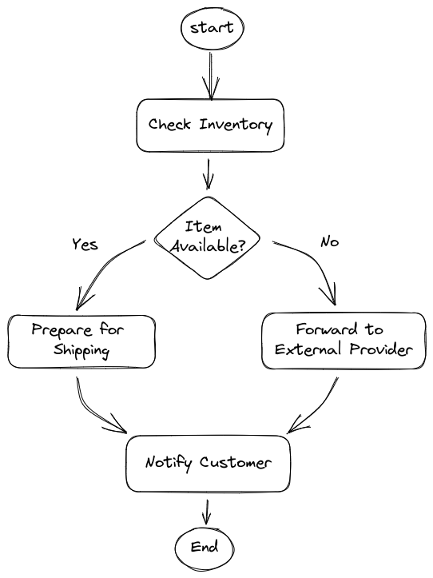
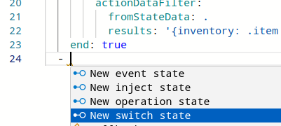
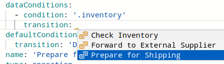
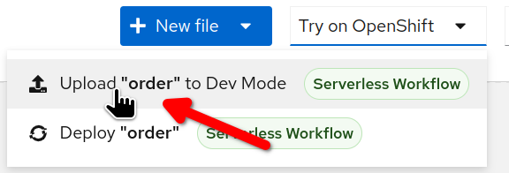
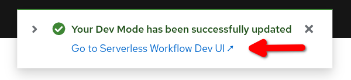
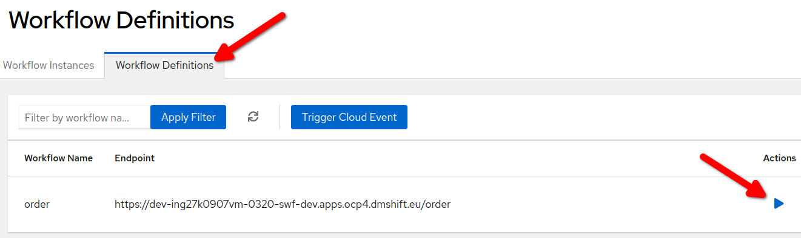
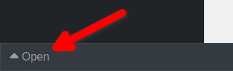
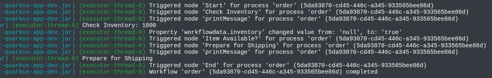

Inventory Logic
In this section, you will expand the workflow logic to manage a first stage of fictional use case.
The use case
| As any other tutorial use case, the situation we are going to consider is somewhat realistic, but for sake of simplicity we are going to oversee many real aspects. The primary goal is to show the key capabilities of the Serverless Workflow specification, please, apologise for the many naiveties that domain experts can easily point out. |
An e-commerce company has to implement the following order management workflow:
-
When a new order come in, they need to check the inventory for the availability of the items. If the items are available the order will be prepared for shipping (picking, packaging, printing label, etc), when the shipping is completed, the shipping department send an event back to the workflow and the customer is notified about the shipping status with usual tracking information.
-
If the item is out of stock, the order will be forwarded to a external supplier who will take care of the shipping procedure, when the supplier ships the order, it also send an event back to the workflow, in such a way the workflow can continue and send the notification to the customer.
-
As long as the order is not shipped, the customer has the option of cancelling the order by also cancelling the shipping.
The following picture shows an high level design:

The final use case will be implemented going through a set consecutive sprints[1], in every sprint you are going to experience a new feature of the Serverless Workflow specification.
The Inventory Sprint
In this sprint we are going to add the check inventory operation and based on the outcome call a prepare for shipping or forward to external supplier.
Switch back to the Serverless Logic Web Tools to edit the order workflow:
-
Rename the first state from
Order ReceivedtoCheck Inventoryupdating the following places:-
the
startvalue -
state
name -
the
messagecontent
To change all occurrences in one shot: select Order Received, press twiceCTRL-D, perform the rename, then pressESC -
-
In the
Check Inventorystate, add the following definition just after thefunctionRefobject (at the same level):actionDataFilter: fromStateData: . results: '{inventory: .item | test("0+") }'This code mocks up the check inventory logic:
actionDataFilteris a feature to manipulate the workflow data (state scoped), in practical terms it gets theitemvalue and create a new datainventorywhich value can be true or false if theitemcontains one or more0The previous logic is an example of the JQ expression language which plays a key role in Serverless Workflow. To evaluate and manipulate data is crucial to gaining some familiarity with this language Understanding JQ expressions -
Introduce a new switch state after the previous state:
-
Move the cursor to the end of yaml file at state level and type
-Enterto confirm the suggestion. -
Update the template keys
nameandconditionas in the following snippet:- name: 'Item Available?' type: switch dataConditions: - condition: '.inventory' transition: 'Transition to another state if condition is true' defaultCondition: transition: 'Default transition of the workflow' -
Go back to
Check Inventorystate and replace theenddeclaration with transition to point to the switch state:transition: Item Available?
-
-
After the switch, you have to add other two states:
-
Add a new operation state for
Prepare for Shipping:- name: 'Prepare for Shipping' type: operation actions: - name: printAction functionRef: refName: printMessage arguments: message: Prepare for Shipping end: true -
Add an new operation state for
Forward to External Supplier:- name: 'Forward to External Supplier' type: operation actions: - name: printAction functionRef: refName: printMessage arguments: message: Forward to External Supplier end: true
-
-
Update the switch state to point to the correct operation states:
-
for the conditional branch set the transition to
Prepare for Shipping -
for the default condition set the transition to
Forward to External Supplier
-
The workflow diagram should now resemble the following:
|
You can compare your resulting workflow with the expected solution at this stage in |
Test the workflow logic
Before connecting the workflow to an external service is a good idea to probe it in isolation (i.e. smoke test): in fact, the current actions only print messages in the console.
-
Deploy the current workflow:
-
Select
Try on OpenShiftbutton and thenUpload "order" to Dev Mode.
-
Wait for the confirmation message and select
Go to Serverless Workflow Dev UI ↗to open the Dev UI in a new browser tab.
-
-
Trigger a new workflow instance:
-
Select
Workflow Definitions -
Click on the arrow button in corresponding to the
orderrow.
-
Fill in the
Start Workflow Dataedit box with the following JSON payload:{ "orderId": "1000", "item": "1110" } -
Select the
Startbutton below.
-
-
Check the results and the workflow execution:
-
Switch to the Workflow Instances page
-
Click on the latest instance to show the Workflow Details page
-
-
Trigger a new workflow instance with the following payload and make sure that the workflow execution follow the other branch (
Forward to External Supplier){ "orderId": "1001", "item": "1111" }
Another tool for checking the workflow execution is the Console:
-
At the bottom of the Dev UI, click on the
Opentoggle.
-
Among other log lines, you should spot the output of
printMessage:
Call an external REST service
Serverless Workflow have a straightforward integration with OpenAPIs.
In order to experiment this capability, we’ll use a side application called order-swf-tut-svc that exposes two simple REST operations:
-
sendOrderto send order to a supplier -
cancelOrderto send an order cancellation to a supplier
order-swf-tut-svc application should be already deployed in the swf-shared namespace. However, if it’s not the case, you’ll find direction on how to deploy it in the Setup chapter.
|
The link between the workflow and the rest service is the OpenAPIs spec file that should be located inside the specs folder.
For sake of simplicity, you will import a project that contains all the required files: the workflow yaml, the OpenAPI spec and the application.property file. The latter contains information about the REST service endpoint.
-
Open the Serverless Logic Web Tools in your browser (if you already have it in your browser window, make sure to click on the top banner to open the home page).
-
Locate the
Importbox in the page and copy the following address in the URL field:https://github.com/dmarrazzo/order-swf-tut.git -
Click the
Clonebutton
The tool will take you to the Serverless Workflow designer, but you can switch to the other files in the project by clicking the arrow next the file name:
In the following steps, you’ll enhance the workflow design to call an external service:
-
Add the OpenAPI references in the
functionsdeclaration section:- name: sendOrder operation: specs/supplier.yaml#sendOrder type: rest - name: cancelOrder operation: specs/supplier.yaml#cancelOrder type: rest -
Locate the
Forward to External Supplierstate declaration.You can click on state in the workflow diagram and the tool will take the cursor to the declaration line in the yaml editor. -
Replace
printActionwithsendOrder:actions: - name: sendOrder functionRef: refName: sendOrder arguments: supplier-id: sup-01 content: '.orderId'The rest service is invoked with two arguments, a dummy supplier-id(sup-01) and the value oforderId.
Test the external REST service
In order to test the REST call you have to trigger a new workflow instance with the following payload:
{
"orderId": "1002",
"item": "1111"
}In the log file you should notice a different output coming from the REST implementation:
Triggered node 'Forward to External Supplier' for process 'order' (0ce6279c-2e84-42d0-b651-5e7b5257ef74)
Triggered node 'sendOrder' for process 'order' (0ce6279c-2e84-42d0-b651-5e7b5257ef74)
Property 'workflowdata.response' changed value from: 'null', to: '"receipt-sup-01-1002"'Finally, open the workflow instance details and pay attention to a new variable which is injected by the REST service response:
CONGRATULATION!!! Now your Serverless Workflow call a REST service!